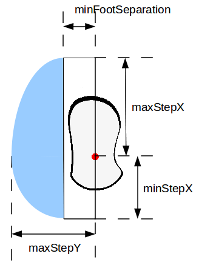
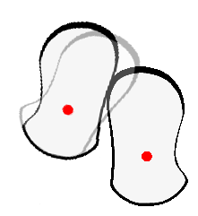

NAOqi Motion || Overview | API | foot planner Tutorial | robot position Tutorial
This tutorial explains how to deal with the foot planner restriction (clipping) and to be able to create its own planner.
Note
The tutorial is written in Python.
You can download the foot step clipping algorithm here: almath_foot_clip.py
Please refer to the section: Python SDK Install Guide for any troubleshooting linked to python.
By using the ALMotionProxy::setFootSteps() or ALMotionProxy::setFootStepsWithSpeed() methods, you can create your own planner.
But ALMotion uses three clipping function to avoid collision or singularity. In this section we describe these algorithms.
The table below gives the clipping value for a right support. (For a left support maxStepY and minFootSepration becomes negative).
| Name | Value | Description |
|---|---|---|
| maxStepX | 0.080 meters | Maximum forward step |
| minStpeX | -0.040 meters | Maximum backward step |
| maxStepY | 0.160 meters | Maximum lateral step |
| minFootSeparation | 0.088 meters | Avoids foot collisions during lateral motion |
| maxStepTheta | 0.52359 radian | Maximum rotation step |
Here, the python clipping algorithm with maximum gait data is presented:
def clipData(minValue, maxValue, value):
''' Clip value between two extremes. '''
clipped = value
if (clipped < minValue):
clipped = minValue
if (clipped > maxValue):
clipped = maxValue
return clipped
def clipFootStepOnGaitConfig(footMove, isLeftSupport):
''' Clip the foot move so that it does not exceed the maximum
size of steps.
footMove is an almath.Pose2D (x, y, theta position).
isLeftSupport must be set to True if the move is on the right leg
(the robot is supporting itself on the left leg).
'''
# Clip X.
clippedX = clipData(minStepX, maxStepX, footMove.x)
footMove.x = clippedX
# Clip Y.
if not isLeftSupport:
clippedY = clipData(minFootSeparation, maxStepY, footMove.y)
else:
clippedY = clipData(-maxStepY, - minFootSeparation, footMove.y)
footMove.y = clippedY
# Clip Theta.
clippedTheta = clipData(-maxStepTheta, maxStepTheta, footMove.theta)
footMove.theta = clippedTheta
To avoid to create singularity problem with inverse kinematics, we have choosen to clip the foot step data with an ellipsoid. In fact only pmaxStepX with maxStepY is not allowed.
We use the AL::Math:clipFootWithEllipse function (libalmath API reference).
The figure below give an illustration of the allowed zone (blue in the picture).
Here, the python clipping algorithm with ellipse is presented:
def clipFootStepWithEllipse(footMove):
''' Clip the foot move inside an ellipse defined by the foot's dimansions.
footMove is an almath.Pose2D (x, y, theta position).
'''
# Apply an offset to have Y component of foot move centered on 0.
if (footMove.y < -minFootSeparation):
footMove.y = footMove.y + minFootSeparation
elif (footMove.y > minFootSeparation):
footMove.y = footMove.y - minFootSeparation
else:
return
# Clip the foot move to an ellipse using ALMath method.
if footMove.x >= 0:
almath.clipFootWithEllipse(maxStepX, maxStepY - minFootSeparation, footMove)
else:
almath.clipFootWithEllipse(minStepX, maxStepY - minFootSeparation, footMove)
# Correct the previous offset on Y component.
if footMove.y >=0:
footMove.y = footMove.y + minFootSeparation
else:
footMove.y = footMove.y - minFootSeparation
The final clipping is about pTheta. If feet collide with the given pTheta, we found with a dichotomy algorithm the near value that is out of the collision.
We use the AL::Math:avoidFootCollision function (libalmath API reference) for the dichotomy algorithm.
The picture below illustrates this clipping. (The grey left foot print was the one given by the user and the black left foot print is the result of the clipping)
Here, the python clipping algorithm with ellipse is presented:
# Bounding boxes of NAO's feet.
rFootBoxFL = almath.Pose2D( 0.110, 0.038, 0.0)
rFootBoxFR = almath.Pose2D( 0.110, -0.050, 0.0)
rFootBoxRR = almath.Pose2D(-0.047, -0.050, 0.0)
rFootBoxRL = almath.Pose2D(-0.047, 0.038, 0.0)
rFootBox = almath.vectorPose2D([rFootBoxFL, rFootBoxFR, rFootBoxRR, rFootBoxRL])
lFootBoxFL = almath.Pose2D( 0.110, 0.050, 0.0)
lFootBoxFR = almath.Pose2D( 0.110, -0.038, 0.0)
lFootBoxRR = almath.Pose2D(-0.047, -0.038, 0.0)
lFootBoxRL = almath.Pose2D(-0.047, 0.050, 0.0)
lFootBox = almath.vectorPose2D([lFootBoxFL, lFootBoxFR, lFootBoxRR, lFootBoxRL])
def clipFootStepToAvoidCollision(footMove, isLeftSupport):
''' Clip the foot move to avoid collision with the other foot.
footMove is an almath.Pose2D (x, y, theta position).
isLeftSupport must be set to True if the move is on the right leg
(the robot is supporting itself on the left leg).
'''
# Use ALMath method.
almath.avoidFootCollision(lFootBox, rFootBox, isLeftSupport, footMove)